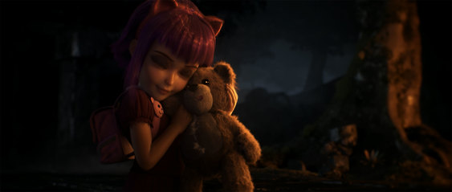
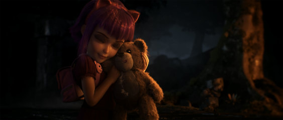

视觉清晰度
炫目的画面自然很好，但我们想让英雄在释放技能，或是从三角草丛里出现的时候尽可能地清晰可辨。《英雄联盟》是一个非常激烈的对抗游戏，一秒之内的决定都有可能是生死攸关的。所以清晰度是重中之重。
主题的统一性
一个英雄，无论是打不死的壮汉，还是憨态可掬的大毛球，都不应该与召唤师峡谷格格不入。主题的统一性把这个世界紧紧地捏合在一起，使得每个英雄看起来都是庞大世界中天然的一份子。
永恒的美
新的游戏一直层出不穷，它们会带来更高精度的模型，更好的光照效果。但是，为了最大程度还原现实的努力一定会在将来过时。我们希望即使再过十五年，召唤师峡谷仍然是美丽的，所以我们赋予了它类似绘画的感觉：周详的细节，经典的配色和丰满的材质。